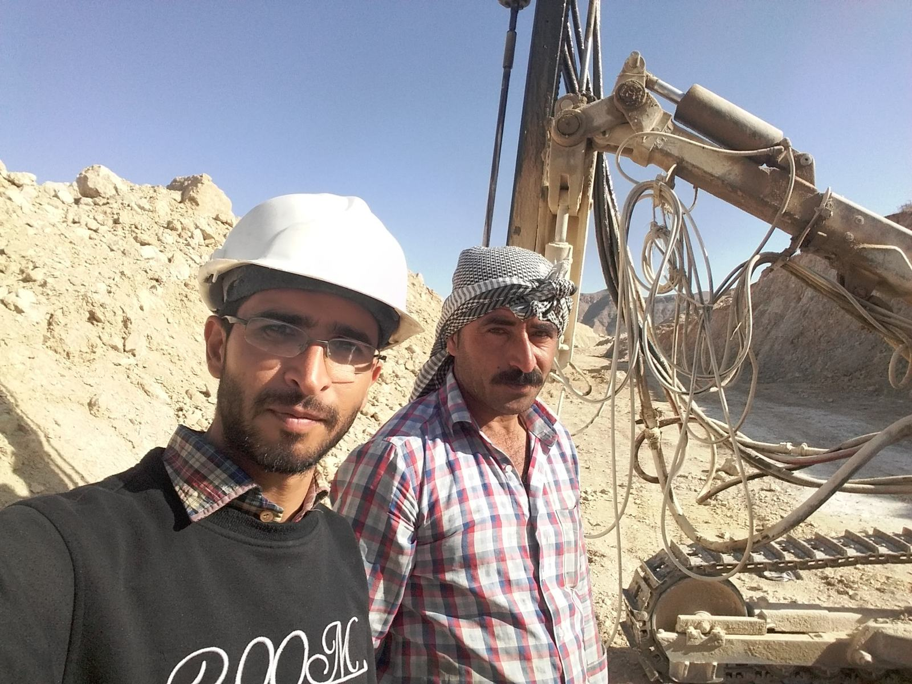
Tunnel- und Baustellenpraxis
Dokumentation und Begleitung tunnelbezogener Arbeiten, Baustellenkoordination, technische Beobachtung vor Ort und Verständnis realer Bauabläufe unter anspruchsvollen Bedingungen.
Masterstudent an der Ruhr-Universität Bochum mit Schwerpunkt Geotechnik, numerische Modellierung, untergrundbezogene Systeme sowie praktische Erfahrung in Tunnelbau, Felduntersuchungen und bergbaunahen Projekten.
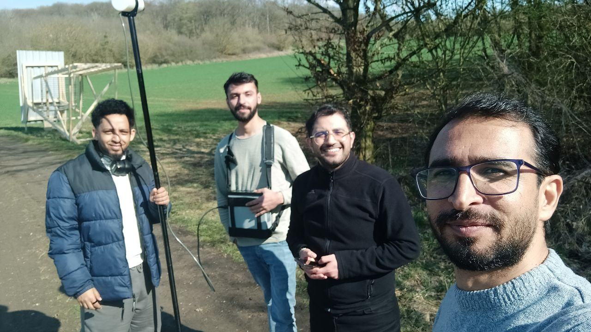
Über mich
Ich arbeite an der Schnittstelle von Geotechnik, Felsmechanik, Tunnelbau und numerischer Analyse. Mein akademischer Schwerpunkt liegt aktuell auf geotechnischer Modellierung, PLAXIS 2D/3D und bodenbezogenen Systemen im Masterstudium Subsurface Engineering. Gleichzeitig bringe ich praktische Erfahrung aus Tunnel- und Bergbauprojekten, Felddokumentation sowie technischen Baustellenabläufen mit.
Mich interessieren vor allem Projekte, bei denen analytisches Denken, technisches Verständnis und reale Baupraxis zusammenkommen – von der Auswertung geotechnischer Fragestellungen bis zur Arbeit mit Feld- und Projektdaten.
Projekte
Die folgenden Bilder zeigen verschiedene Stationen aus meiner praktischen und technischen Erfahrung – von Tunnelbau und bergbaunahen Einsätzen bis zu geophysikalischer Feldarbeit und technischer Dokumentation.

Dokumentation und Begleitung tunnelbezogener Arbeiten, Baustellenkoordination, technische Beobachtung vor Ort und Verständnis realer Bauabläufe unter anspruchsvollen Bedingungen.

Arbeit mit Messgeräten und Feldausrüstung zur Datenerfassung, strukturierte Vorbereitung der Kampagnen und technische Mitwirkung bei standortbezogenen Untersuchungen.
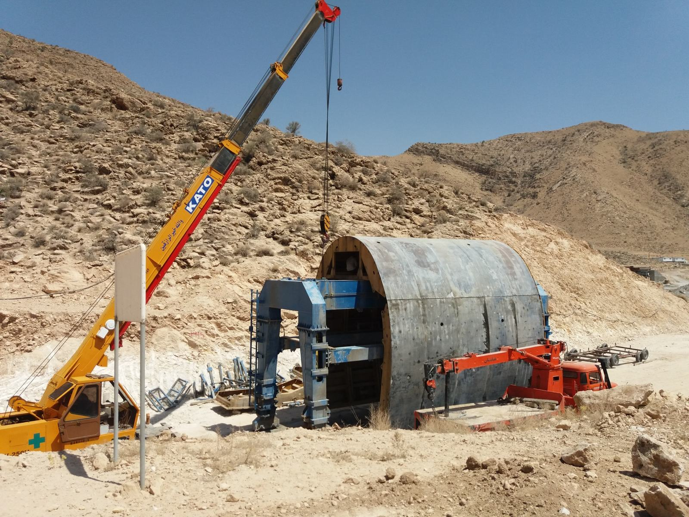
Zusammenarbeit im Umfeld von Ingenieurprojekten, Bauteilmontage, Feldkoordination sowie technische Beobachtung von Ausführungsschritten und Projektlogistik.
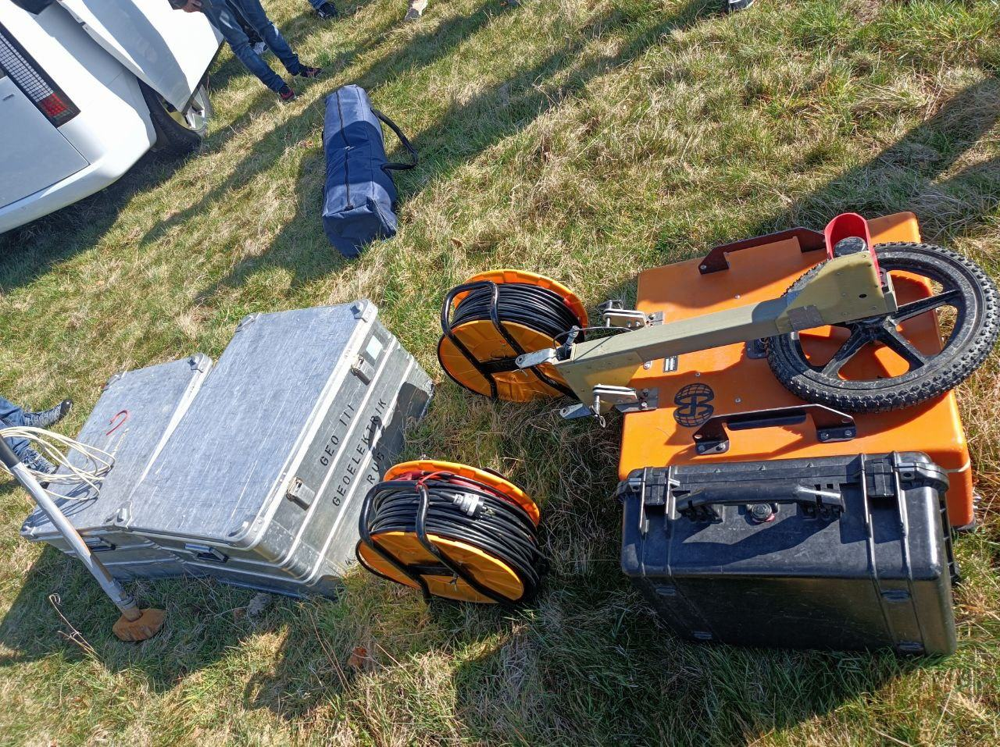
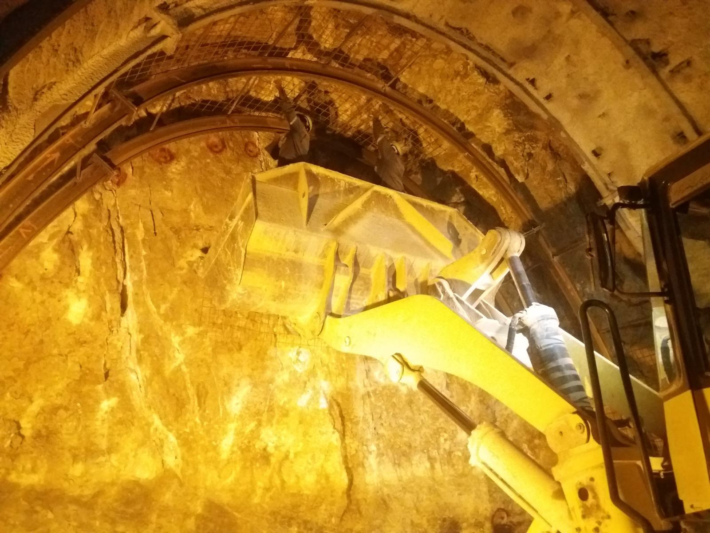
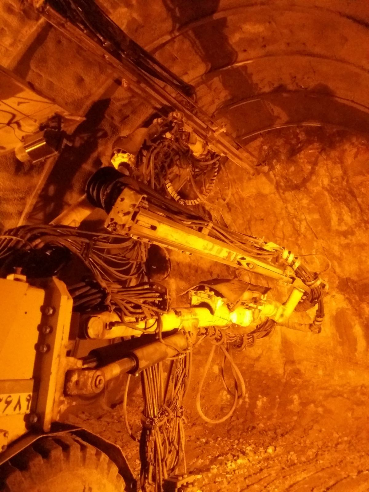
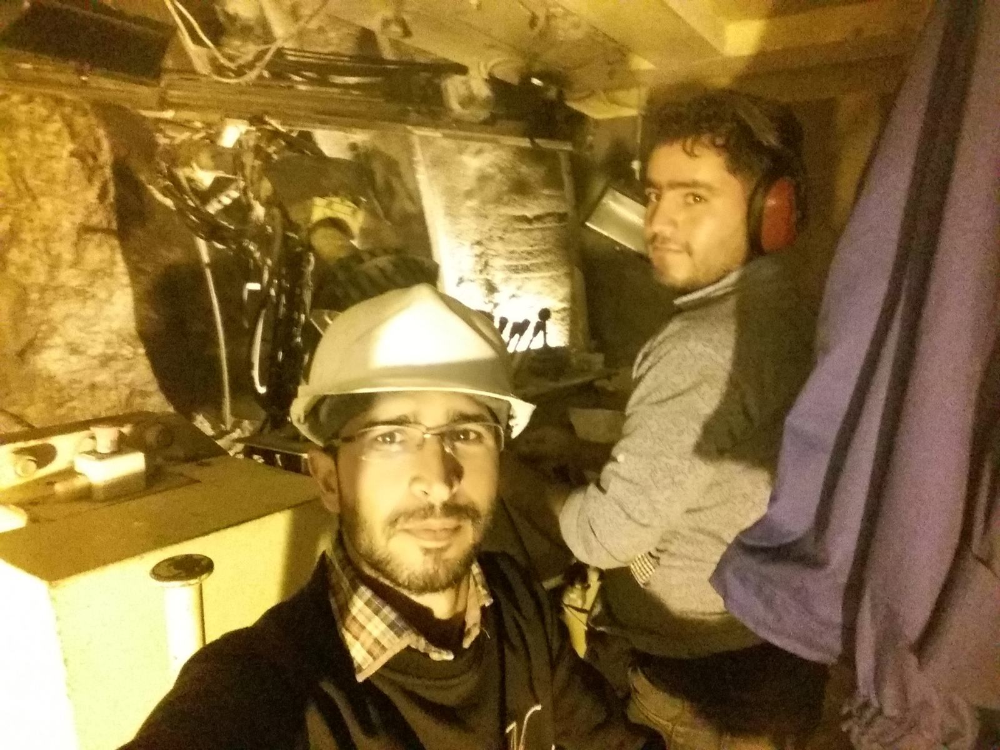
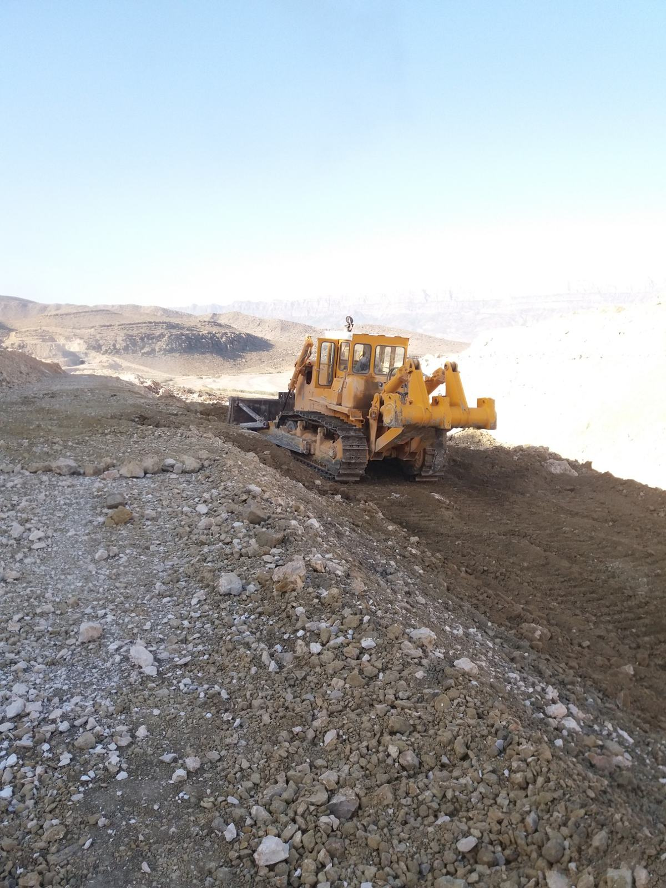
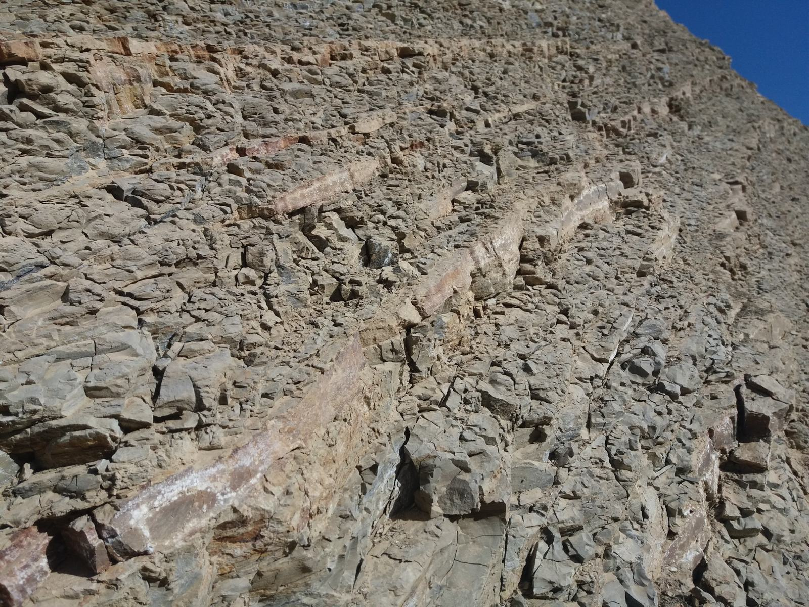
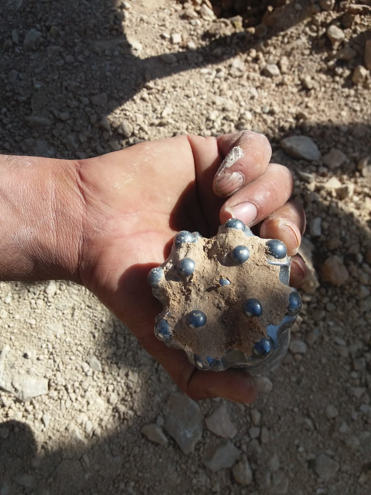

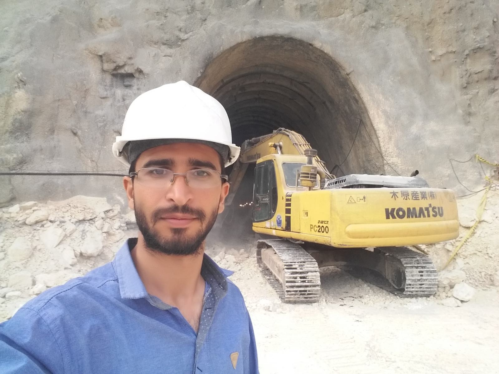

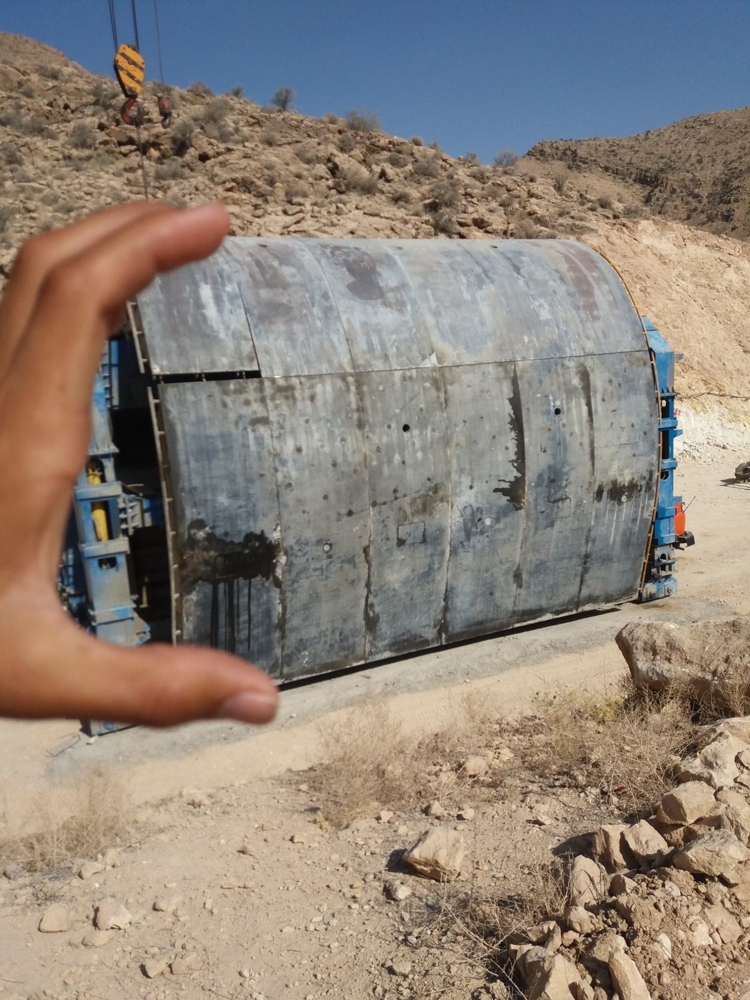
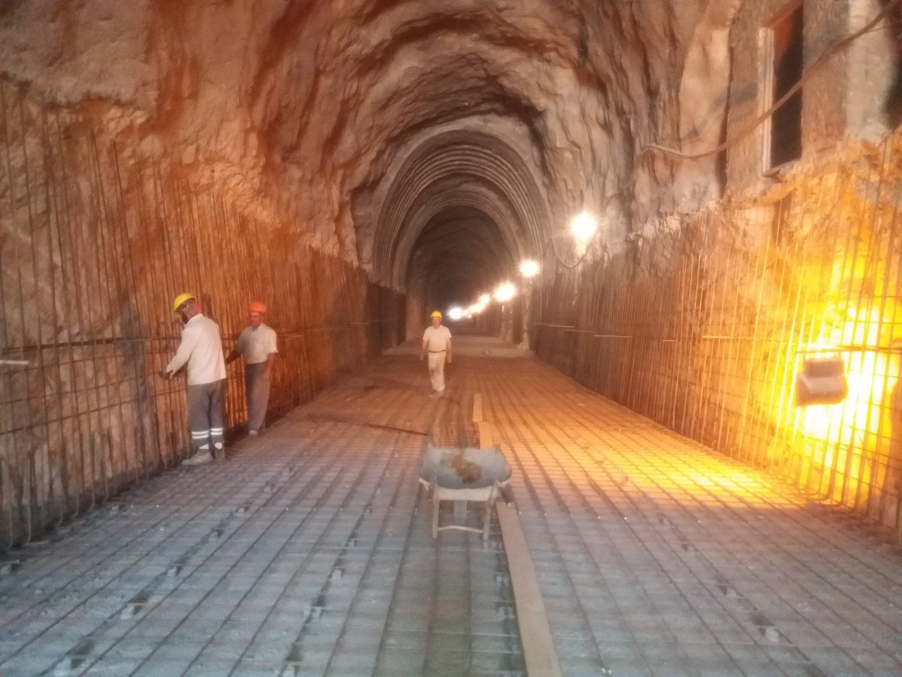


Kontakt
Bei Interesse an meinem Profil, meinen Projekten oder einer möglichen Zusammenarbeit freue ich mich über Ihre Nachricht. Weitere Inhalte, zusätzliche Projektdetails und die englische CV-Version können im nächsten Schritt ergänzt werden.